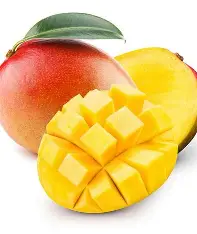
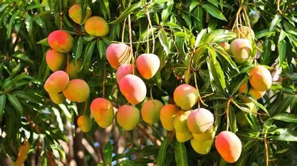

El mango es una fruta tropical originaria del sur de Asia, especialmente de la India, donde se cultiva desde hace miles de años. Su sabor dulce y jugoso lo convierte en uno de los frutos más apreciados en todo el mundo. Además, existen múltiples variedades que se diferencian en tamaño, color y textura. El mango no solo es delicioso, sino que también es altamente nutritivo y beneficioso para la salud. Su consumo se ha extendido a todos los continentes gracias a su versatilidad en la cocina.
El mango es rico en vitaminas A y C, esenciales para fortalecer el sistema inmunológico y mantener la piel saludable. También contiene fibra, que ayuda a mejorar la digestión y prevenir problemas intestinales. Su pulpa anaranjada es fuente de antioxidantes que combaten los radicales libres en el organismo. Además, el mango aporta minerales como potasio y magnesio, fundamentales para el buen funcionamiento del cuerpo. Por estas razones, se considera una fruta que combina sabor y salud en cada bocado.
Además de consumirse fresco, el mango se utiliza en una gran variedad de preparaciones culinarias. Se puede disfrutar en jugos, postres, ensaladas, salsas y hasta en platillos salados. En muchos países, el mango es símbolo de abundancia y prosperidad. Su aroma característico y su textura suave lo convierten en un ingrediente versátil y muy popular. Gracias a su amplia disponibilidad, el mango se ha convertido en una fruta que une culturas y tradiciones alrededor del mundo. Es, sin duda, un regalo de la naturaleza.